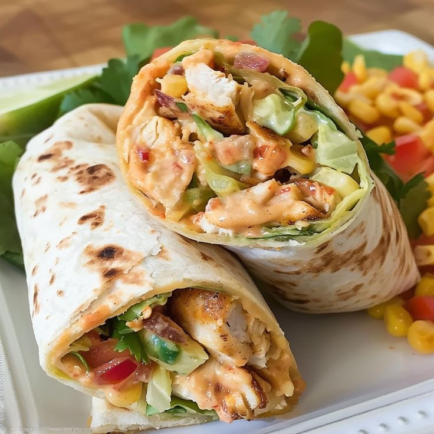

Reuse Bites
Reuse Bites
Top 5 Recipes to Use Leftovers
Leftover Fried Rice
Ingredients:
- 2 cups cooked rice (chilled)
- 1 cup mixed leftover vegetables
- 1 egg (optional)
- 2 tbsp soy sauce
- 1 tsp sesame oil
- 1 clove garlic, minced
- 1 tbsp vegetable oil
Method:
- Heat vegetable oil in a pan over medium heat. Add minced garlic and stir for 30 seconds.
- Add leftover vegetables. Sauté for 2–3 minutes until heated.
- Push veggies to the side. Crack in the egg and scramble (optional).
- Add chilled rice, soy sauce, and sesame oil. Mix well and cook for 3–5 mins.
- Serve hot and garnish with green onions or sesame seeds if available.
Stale Bread Pudding
Ingredients:
- 4 cups stale bread cubes
- 2 cups milk
- 2 eggs
- 1/4 cup sugar
- 1 tsp vanilla extract
- 1/2 tsp cinnamon
- 1/4 cup raisins (optional)
Method:
- Preheat oven to 175°C (350°F). Grease a small baking dish.
- Whisk eggs, sugar, milk, vanilla, and cinnamon in a bowl.
- Add bread cubes and let them soak for 10 minutes.
- Stir in raisins if using, pour into the baking dish, and bake for 30–35 minutes.
- Cool slightly and serve warm or chilled with cream or ice cream.
Leftover Pasta Bake
Ingredients:
- 2 cups cooked pasta
- 1 cup leftover meat or veggies
- 1/2 cup tomato sauce
- 1/2 cup shredded cheese
- 1/4 cup milk or cream
- Salt & pepper to taste
Method:
- Preheat oven to 180°C (350°F). Mix pasta, sauce, milk, and leftovers in a bowl.
- Pour into a baking dish, top with shredded cheese.
- Bake for 20–25 minutes until bubbly and golden on top.
- Let it rest for 5 minutes before serving.
Leftover Veggie Soup
Ingredients:
- 2 cups chopped leftover veggies
- 4 cups broth (any type)
- 1/2 cup cooked rice
- 1 small onion, chopped
- 2 garlic cloves, minced
- 1 tbsp olive oil
- Salt, pepper & herbs
Method:
- Heat olive oil in a pot. Sauté onion and garlic until fragrant.
- Add chopped veggies and cook for 5 minutes.
- Pour in broth, bring to a boil, then simmer for 15 minutes.
- Add cooked rice, season with salt, pepper, and herbs.
- Serve warm with toast or crackers.

Leftover Chicken Wraps
Ingredients:
- 1 cup shredded leftover chicken
- 2 tortillas or flatbreads
- 1/4 cup chopped veggies (lettuce, tomatoes, cucumber)
- 2 tbsp yogurt or mayo
- Salt & pepper
Method:
- Mix shredded chicken with yogurt or mayo. Add salt & pepper.
- Warm the tortillas in a pan or microwave.
- Place chicken mix and chopped veggies on each tortilla.
- Roll up tightly and slice in half. Serve with sauce or fresh salad.